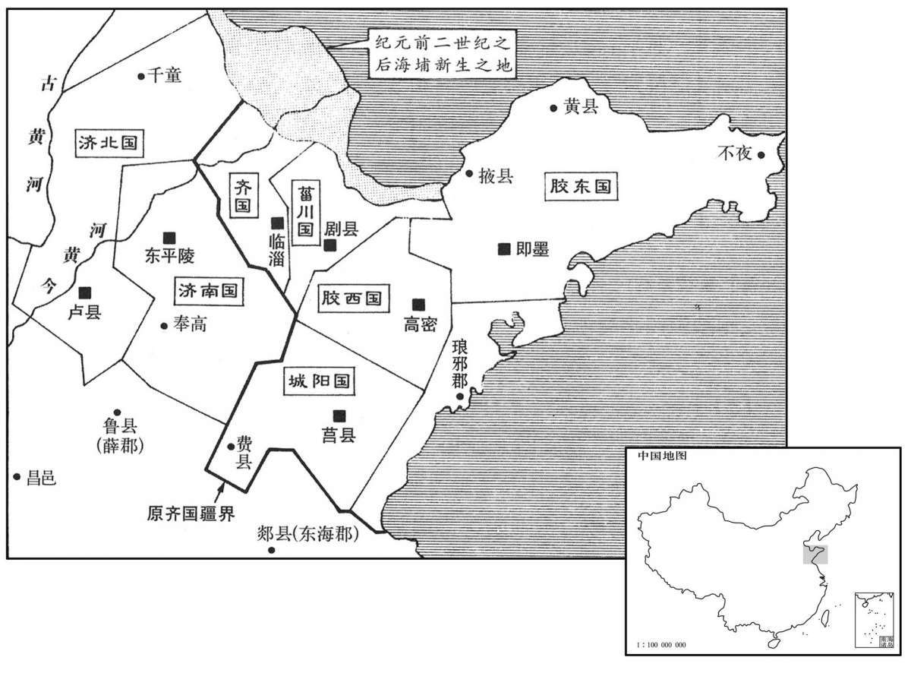
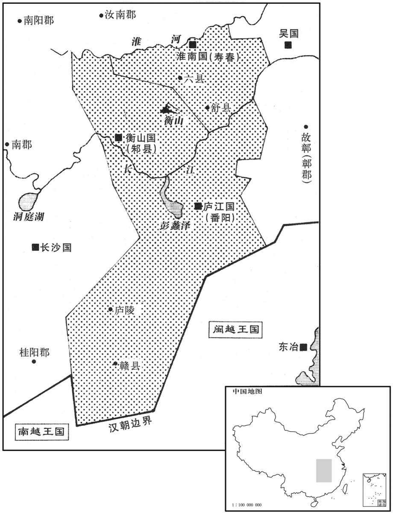

公元前164年资治通鉴：本年记事、原文与白话对照
按原书编年位置阅读；追叙和史论不等于本年发生的事件。白话采用所据译本，缺译不以生成译文补齐。
卷15 · 本年记事
公元前164年 · 汉太宗孝文皇帝前十六年
十六年〔（丁丑、前一六四）〕
本年事件索引（现代整理）

本年形势与背景参考图

本年形势与背景参考图
夏，四月，上郊祀五帝于渭阳五帝庙。于是贵新垣平至上大夫，〔周官有上大夫。汉官有太中大夫、中大夫、谏大夫；爵十九级，有大夫、五大夫，而上大夫不见于表。〕赐累千金；而使博士、诸生刺六经中作王制，〔师古曰：刺，采取也；七赐翻。即今礼记王制篇是也。〕谋议巡狩、封禅事，又于长门道北立五帝坛。〔如淳曰：长门，亭名，在长安城东南。括地志：长门故亭，在雍州万年县东北苑中。〕
夏季，四月，文帝在渭阳五帝庙郊祭五帝。这时，文帝宠贵新垣平，封为上大夫，赏赐黄金累计一千斤；文帝还让博士、诸生杂采《六经》中的记载，汇集成《王制》，谋划议论巡狩、封禅等事。又在长门亭的道北设立了五帝坛。
徙淮南王喜复为城阳王。又分齐为六国；丙寅，立齐悼惠王子在者六人：杨虚侯将闾为齐王，安都侯志为济北王，武成侯贤为菑川王，白石侯雄渠为胶东王，平昌侯昂为胶西王，仂侯辟光为济南王。淮南厉王子在者三人：阜陵侯安为淮南王，安阳侯勃为衡山王，阳周侯赐为庐江王。〔十一年，徙城阳王喜王淮南，今复其旧；将复以淮南地分王厉王三子安、勃、赐也。杨虚，据水经，河水过杨虚县；注引地理志曰：杨虚，平原之隶县也，城在高唐之西南；而班志无此县，不知郦道元所谓志者何志也。史记正义曰：安都故城，在瀛州高阳县西南三十九里。济北王，都卢。“武成”，史记作“武城”。索隐曰：武城县属平原。正义曰：贝州县。菑川王，都剧。班志，金城郡有白石县。正义曰：白石故城，在德州安德县北二十里。胶东王，都即墨。班志，平昌，侯国，属平原郡。胶西王，都高苑。仂，侯国，属平原郡。济南王，都东平陵。阜陵县属九江郡。淮南王，都寿春。安阳属汝南郡。衡山王，都六。阳周县属上郡。庐江王，都江南。济，子礼翻。仂，音力。〕
文帝把淮南王刘喜再次封为城阳王。又把齐国分立为六国。丙寅（十七日），文帝封立齐悼惠王在世的六个儿子为王：杨虚侯刘将闾为齐王，安都侯刘志为济北王，武成侯刘贤为川王，白石侯刘雄渠为胶东王，平昌侯刘为胶西王，侯刘辟光为济南王。文帝封立淮南厉王在世的三个儿子为王：阜陵侯刘安为淮南王，安阳侯刘勃为衡山王，阳周侯刘赐为庐江王。
秋，九月，新垣平使人持玉杯上书阙下献之。平言上曰：“阙下有宝玉气来者。”已，视之，果有献玉杯者，刻曰“人主延寿”。平又言：“臣候日再中。”居顷之，日却，复中。于是始更以十七年为元年，〔复，扶又翻。〕令天下大酺。〔汉律：三人无故群饮，罚金四两。今诏横赐得会聚饮食。师古曰：酺，布也；言王德布于天下而合聚饮食为酺。周礼族师：春秋祭酺。注：酺者，为人烖害之神也。有马酺，有蝝螟之酺与人鬼之酺，亦为坛位如云禜。族长无饮酒之礼，因祭酺而与其民以长幼相献酬焉。正义曰：古者祭酺，聚钱饮酒，故后世听民聚饮，皆谓之酺。汉书，每有嘉庆，令民大酺，是其事也。彼注云因祭酺而与其民长幼相酬，郑注所谓祭酺，合醵也。酺，音蒲。〕平言曰：“周鼎亡在泗水中。今河决，通于泗，臣望东北汾阴直有金宝气，〔班志，汾阴县属河东郡。师古曰：直，谓正当分阴也。宋白曰：蒲州宝鼎县，古纶氏地，夏少康所邑也。汾水南流过县，汉置汾阴县，今县北九十里汾阴故城是也。〕意周鼎其出乎！兆见，不迎则不至。”于是上使使治庙汾阴，南临河，欲祠出周鼎。〔见，贤遍翻。〕
秋季，九月，新垣平指使人携带玉杯到皇宫门前上书，献宝给文帝。新垣平对文帝说：“宫门前有一股宝玉之气移来。”过了一会，前去查看，果然有人来献玉杯，杯上刻有“人主延寿”四字。新垣平又说：“我算出今天太阳将再次出现在中天。”过了一会儿，太阳向东退行，再次到达中天。于是，决定把文帝在位的第十七年改称为元年，并特许天下人聚会痛饮，以示庆贺。新垣平说：“周朝的大鼎沉没在泗水中。现在黄河决口，与泗水相连通，我看东北正对着汾阴有金宝之气，估计周鼎可能会出世吧！它的征兆已经出现了，如果不去迎接，周鼎是不会来的。”这个时候，文帝派人在汾阴修庙，南面靠崐近黄河，想要通过祭祀求得周鼎出世。